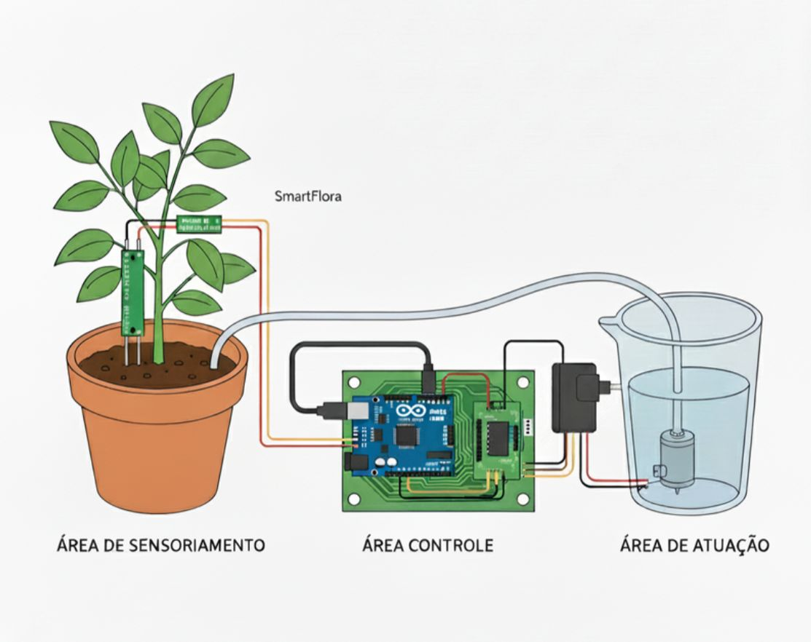

SmartFlora
Inteligência e Sustentabilidade para o Cultivo Urbano.
#Arduino #SensorDeUmidade #Automação
A Revolução Verde no Seu Vaso
Motivação e Lógica de Funcionamento
O projeto SmartFlora nasceu da necessidade de gerenciar o consumo hídrico de plantas com precisão, evitando o desperdício e garantindo a saúde ideal do solo. Nosso sistema utiliza a Computação Física para monitorar e agir autonomamente.
Lógica Central:
- O Sensor Capacitivo mede a umidade do solo (Entrada).
- Se a leitura estiver abaixo do Limite Mínimo (solo seco), o Arduino envia um sinal.
- O Módulo Relé aciona a Bomba/Válvula (Atuador) por um tempo predefinido (Irrigação).
- Após a irrigação, o sistema entra em um eríodo de Descanso para estabilização das leituras.
Esquema Conceitual
Veja o SmartFlora em Ação
Assista ao tutorial completo, mostrando o hardware, a lógica e o funcionamento da irrigação em tempo real.
Componentes e Plataformas
Lista de Hardware
- Arduino Uno R3 (Microcontrolador)
- Shield Arduino Uno R3
- Sensor de Umidade do Solo Capacitivo (Entrada)
- Bomba de Água 220V (Atuador)
- Módulo Relé 220V/5V (Acionador)
- e Jumpers
Softwares e Competências
- Arduino IDE (Programação C/C++)
- GitHub (Versionamento e Código Fonte)
- Competências em Eletrônica e Lógica de Controle

Replicar o Projeto
Baixe o projeto completo (Código, Esquemas e Componentes) e comece a montar o seu SmartFlora!
Download Projeto (.ZIP)